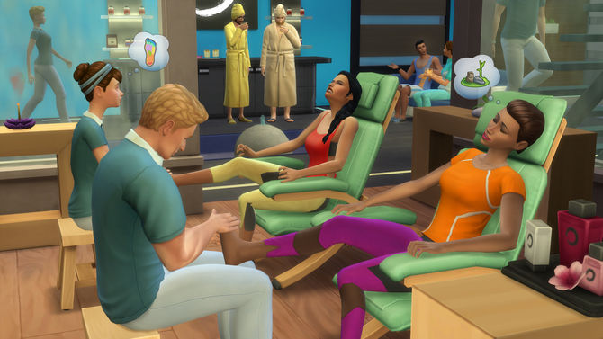

The Sims
Обзор игры
The Sims — однопользовательская видеоигра в жанре симулятора жизни, разработанная командой разработчиков Maxis под руководством геймдизайнера Уилла Райта и изданная компанией Electronic Arts. Игра вышла 31 января 2000 года для Microsoft Windows и 25 июля 2000 года для Mac OS X[2]. Помимо этого, в 2003 году состоялся выпуск другой версии игры для PlayStation 2, Xbox и GameCube. В отличие от базовой игры, The Sims для консолей имеет полноценный 3D-движок.
Игрок управляет одним или несколькими персонажами — симами, заботится об их благополучии, развивает их навыки, укрепляет связи с другими персонажами, продвигает по карьерной лестнице и обустраивает их жилой дом. В игре отсутствует сюжетная линия, и теоретически в игру можно играть «вечно»
Разработчик игры
Разработка игры началась в 1997 году, под руководством Уилла Райта. Он предпринял попытку разработки The Sims ещё в 1993 году.
Системные требования
Windows 95 и выше, Pentium II 233 МГц или выше, 64 Мб RAM, 4x CD-ROM, DirectX 6.0-совместимые звуковая карта и видеокарта
Mac OS X 10.0.3 или выше или Mac OS 8.6 or 9.x с CarbonLib 1.2.5 или выше, PowerPC G3/G4 233 МГц или выше, 64 Мб ОЗУ (Mac OS 8/9) или 128 Мб ОЗУ (Mac OS X)
Linux 2.2 и выше, Glibc 2.1.3 и выше, XFree86 4.0 и выше, Celeron 350 МГц или выше, 64 MiB (желательно 128) RAM, звуковая карта
Видео игры
Скриншоты

Похожие игры
IMVU, My Sunny Resort, The Movies, The Virtual Villagers, Touch, The Virtual Families 2:Our Dream House, Kudos 2, SmallWorlds, Spore, Life Quest 2.